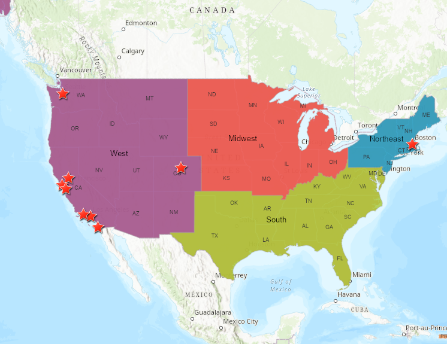

Some home buyers have already found dream homes in 2020, while some of them are still hesitated where and when to buy a home. On the other hand, realtors and investors are also struggling when to get into the market. This portfolio gives some insights of the U.S. real estate market to help people understand the market behaviors. Frist, different region have various real market behaviors. This would help home buyers and investors to know more about the market, which is potentially helpful people to make decision. Moreover, public reactions to the thriving of real estate market vary by different people and press.
 Figure 1. Top 10 Housing Value Metropolitan Area
With the high Vacant Housing Units number holding high in the South Region, large inventory also resides in the South. However,
based on the analysis, the most valued housing value still reside in the West and Northeast Region (Decision Tree and
Naive Bayes session). In fact, 8 of of 10 metropolitan area with
top Home Sales Price are in the West Region. Analysis also shows that West and Northeast Markets are most alike compared to
other regions. Thus, as a home buyer living primary in the South Region, buying a home may not be as hard as in West and
Northeast regardless of other considerations (such as income). On the contrary, the increasing in the West and Northeast region
is also higher than the South, which means, for investors, investing on housing on West and Northeast still be the high risk but
high profit choice.
Individuals like realtor and home buyers may care about different things regarding to this thriving real estate market. Nowadays, more and more people rely on social media to develope their network and obtain information.
Based on twitter hashtag analysis, on one hand, most realtors account using adding related hashtags to get more recognition. For example, tweets with #homebuying are highly likely with #realestate or #homebuyer. In this way, when people try to find information on Twitter, not only the content of interests would come out, other related information would
also be shown. However, not all contents come out in searching results are realted to people's need. Thus, when users using keywords to search the information, more detailed screening of the contents are also needed. For example, users may be interested in home buying tips. In this case, only sub-topic with #REtips may be useful.
On the other hand, added hashtag can indicate the topic of the tweet. Lenders advertize using tweets may add hashtag of "mortgage", while realtors advertize through tweets could add #REtips or #realtor. Based on who is advertizing, the hashtags are different, althrough all the tweets are focusing on the same topic of "homebuying". This is useful for advertizers when customers use more than one hashtag to locate information they needed.
Moreover, based on the advertising topics, for recent home buying and real estate market, mortgage is still one of the main topics for both advertizers including lenders and home buyers. This indicates the importance of mortgage that affects the market.
Different from individuals like realtor and home buyers, the press seems to have a larger picture in mind. The analysis of home buying related news reveals the key words frequently occur in the news. Policy change and the change of interest rate are the main topic to discuss. Instead of mortgage rate increasing, the press care more about why the mortgage change. This is why word like "treasury" stands out.
As same as the analysis for individuals, mortgage rate is still the No.1 topic related to real estate market news. However, news usually has various aspect in one article. For example, real estate news could have paragraphs describing interest rate change, while other paragraphs mentioned how real estate market react to this change. Thus, online news articles are very informative to get general idea of how recent market shifts.
As a conclusion, no matter for realtor, investor, or home buyers, location is critical for their decision. Different region would have various risk and profit. For home buyers, mortgage rate is till the No.1 factor to consider .Thus, for home buyer and other investors, considering overall mortgage rate and local mortage rate is critical for the decision to purchase a home.